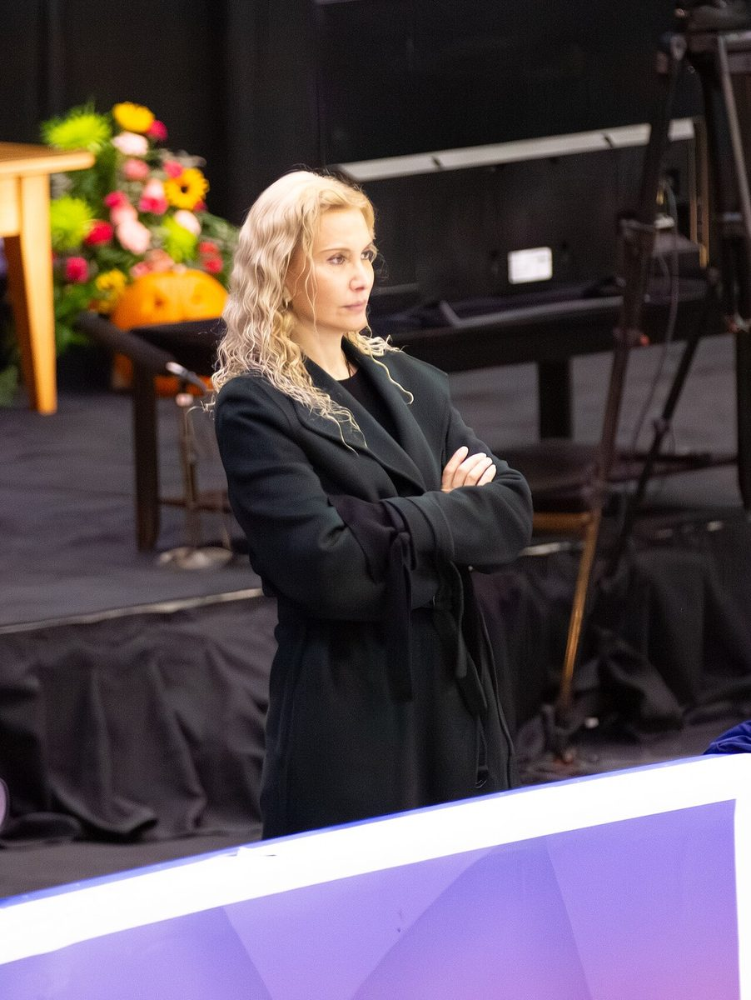
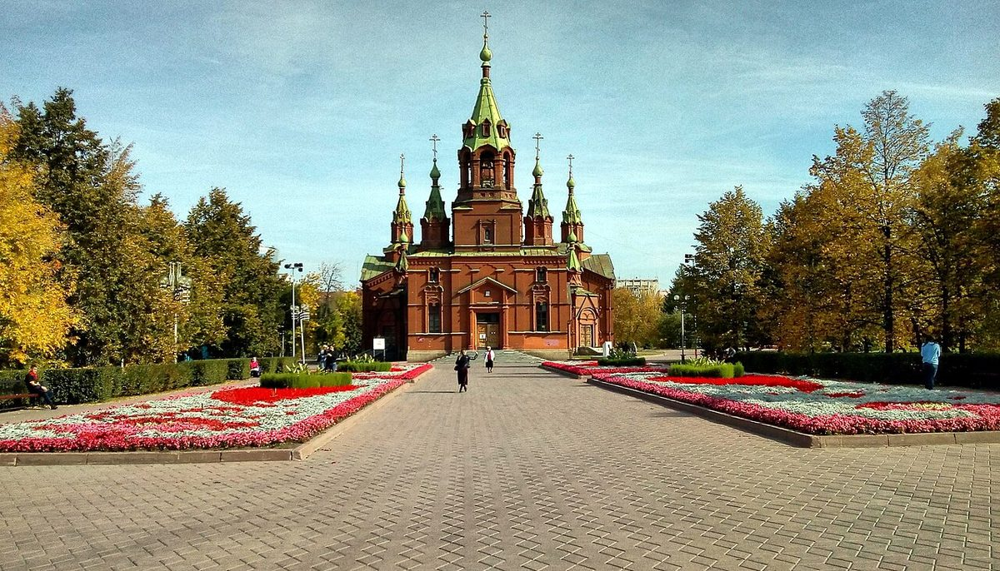

因身体状况与负荷受限，卡米拉·瓦利耶娃遗憾缺席车里雅宾斯克全俄锦标赛
在医生限制其训练负荷后，这位20岁名将未出现在俄罗斯花滑联合会公布的初步参赛名单中。

卡米拉·瓦利耶娃（Kamila Valieva）将不会出战即将于12月17日至20日在车里雅宾斯克举行的俄罗斯花样滑冰锦标赛，这也意味着她将错过这项本国最重要的年度大赛。周二晚间，俄罗斯花样滑冰联合会（FFKKR）公布了初步参赛名单，这位20岁的花滑名将榜上无名，证实了此前俄罗斯国家通讯社塔斯社（TASS）与俄新社（RIA Novosti）的报道。
瓦利耶娃的退赛源于今秋以来持续受困的健康问题与受限的训练节奏。10月下旬，医疗团队建议她暂停跳跃训练一个月。尽管瓦利耶娃已于11月12日恢复上冰，但团队内部人士向俄新社透露，她目前尚未恢复到出战国家级大赛所需的高强度训练状态。
健康波折打乱秋季参赛计划

训练的中断迫使瓦利耶娃放弃了本赛季俄罗斯大奖赛的全部赛站。此前她先是因病退出了10月17日至18日的喀山站揭幕战，随后又缺席了11月14日至15日进行的鄂木斯克总决赛。
由于2021年12月曲美他嗪检测呈阳性，国际体育仲裁法庭（CAS）对其处以四年禁赛。在结束这一禁赛期后，瓦利耶娃于2026年1月的俄罗斯跳跃锦标赛上完成首秀重返赛场。虽然她在今年9月参加了莫斯科举行的国家队测试滑，但自解禁以来，她尚未参加过一场包含短节目与自由滑的完整双节目正式赛事。
重投恩师门下与参赛资格波折
对瓦利耶娃而言，2026–27赛季伴随着巨大的人事与环境变动。在斯韦特兰娜·索科洛夫斯卡娅（Svetlana Sokolovskaia）教练组训练了一年多后，她于今年秋天重返“水晶”冰场（Khrustalny），再次投奔功勋教练埃特丽·图特贝里泽（Eteri Tutberidze）。

然而，她的国际赛参赛资格仍未解冻。国际滑冰联盟（ISU）虽在8月授予了瓦利耶娃中立运动员身份，但随后在9月撤销了该认证。
俄罗斯花滑界普遍认为，瓦利耶娃的缺席对车里雅宾斯克全国锦标赛是一个沉重的打击。著名教练亚历山大·茹林（Alexander Zhulin）在接受俄新社采访时表示：“缺少了她，全俄锦标赛的观赏性无疑会大打折扣。”1988年冬奥会冰舞冠军娜塔莉亚·贝斯特米扬诺娃（Natalia Bestemianova）则向塔斯社坦言，瓦利耶娃“心里有数，她经历了太多风雨”，当下最重要的是把身体健康放在首位。
在瓦利耶娃抱憾挂起免战牌之际，车里雅宾斯克的阵容依旧星光熠熠：北京2022年冬奥会女单银牌得主亚历山德拉·伊格纳托娃（Alexandra Ignatova，原姓特鲁索娃）领衔女子单人滑；男子单人滑则由彼得·古门尼克（Petr Gumennik）和弗拉季斯拉夫·季基吉（Vladislav Dikidzhi）联袂坐镇。